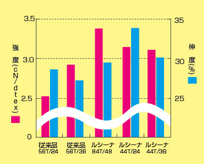

ソフトな風合いと上質な手触りを持つ重衣料・副資材向け高発色フィラメント
HOME
製品情報
ルシーナ®
常圧カチオン可染ポリエステルフィラメント
1OO℃の常圧で淡色から濃色まで魅力ある鮮麗なカチオン染めが可能な高品位常圧カチオン可染ポリエステルフィラメントの誕生です。
100℃の常圧条件で濃淡の鮮麗な発色の後染め加工ができるため、素材の特性を損なうことなく、天然繊維やポリウレタンとの交編交織による新しい複合素材やストレッチ素材が可能になりました。
又、世界ではじめての直接連続重合法によるチップを使用した高品位の常圧カチオン可染ポリエステルフィラメントです。従来のバッチ法によるポリマーを使用した同種品に比べて高強度、高伸度かつ高均一性が魅力です。
特 長
●100℃の常圧で淡色から濃色まで鮮麗なカチオン染めができます。
●100℃の常圧で染色ができるので高温、高圧では脆化するポリウレタン、ウール、シルクなどとの交編交織品の後染め加工が容易です。
●レギュラーポリエステル複合素材の分散染料使用の際にみられる移行昇華問題がありません。
●細繊度、ハイマルチ糸の提供が可能です。
●ソフトな風合いやシルキータッチのしなやかさが得られます。
●高品位(高強度、高伸度、高均一性)の常圧カチオン可染糸です.

用途展開
スポーツウェア、インナー、アウター、重衣料、副資材
●問い合わせ先●
ＫＢセーレン株式会社
kbs.info@kb.seiren.com